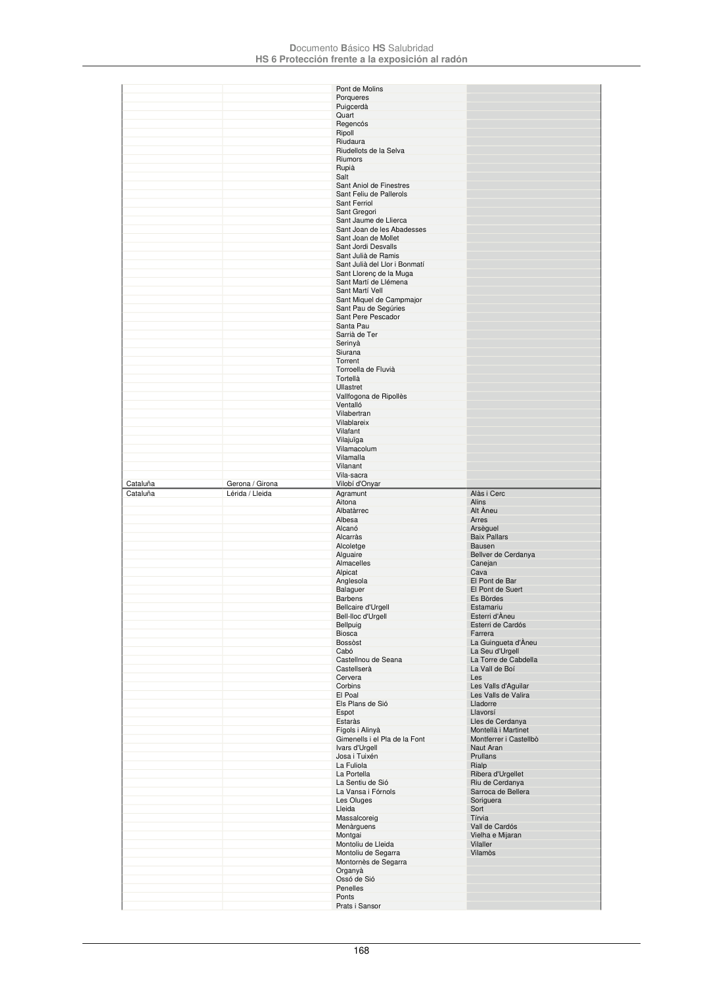

DB-HS Salubridad · edición 2022-06-14 · capa oficial
Documento DB-HS-oficial · SHA-256 del PDF 68df3caacc95f71aee2ec1ba7b2c65ae66155c21e3a8785521b8fdd4fd640d3b
Página física 168 de 184.
Copia fiel del PDF fuente · Fuente oficial
Ficha de la disposición en la fuente oficial
Formato: Texto de la página (Markdown)
Documento Básico HS Salubridad HS 6 Protección frente a la exposición al radón 168 Pont de Molins Porqueres Puigcerdà Quart Regencós Ripoll Riudaura Riudellots de la Selva Riumors Rupià Salt Sant Aniol de Finestres Sant Feliu de Pallerols Sant Ferriol Sant Gregori Sant Jaume de Llierca Sant Joan de les Abadesses Sant Joan de Mollet Sant Jordi Desvalls Sant Julià de Ramis Sant Julià del Llor i Bonmatí Sant Llorenç de la Muga Sant Martí de Llémena Sant Martí Vell Sant Miquel de Campmajor Sant Pau de Segúries Sant Pere Pescador Santa Pau Sarrià de Ter Serinyà Siurana Torrent Torroella de Fluvià Tortellà Ullastret Vallfogona de Ripollès Ventalló Vilabertran Vilablareix Vilafant Vilajuïga Vilamacolum Vilamalla Vilanant Vila-sacra Cataluña Gerona / Girona Vilobí d'Onyar Cataluña Lérida / Lleida Agramunt Alàs i Cerc Aitona Alins Albatàrrec Alt Àneu Albesa Arres Alcanó Arsèguel Alcarràs Baix Pallars Alcoletge Bausen Alguaire Bellver de Cerdanya Almacelles Canejan Alpicat Cava Anglesola El Pont de Bar Balaguer El Pont de Suert Barbens Es Bòrdes Bellcaire d'Urgell Estamariu Bell-lloc d'Urgell Esterri d'Àneu Bellpuig Esterri de Cardós Biosca Farrera Bossòst La Guingueta d'Àneu Cabó La Seu d'Urgell Castellnou de Seana La Torre de Cabdella Castellserà La Vall de Boí Cervera Les Corbins Les Valls d'Aguilar El Poal Les Valls de Valira Els Plans de Sió Lladorre Espot Llavorsí Estaràs Lles de Cerdanya Fígols i Alinyà Montellà i Martinet Gimenells i el Pla de la Font Montferrer i Castellbò Ivars d'Urgell Naut Aran Josa i Tuixén Prullans La Fuliola Rialp La Portella Ribera d'Urgellet La Sentiu de Sió Riu de Cerdanya La Vansa i Fórnols Sarroca de Bellera Les Oluges Soriguera Lleida Sort Massalcoreig Tírvia Menàrguens Vall de Cardós Montgai Vielha e Mijaran Montoliu de Lleida Vilaller Montoliu de Segarra Vilamòs Montornès de Segarra Organyà Ossó de Sió Penelles Ponts Prats i Sansor

Datos candidatos: compruebe celdas y notas en el PDF.